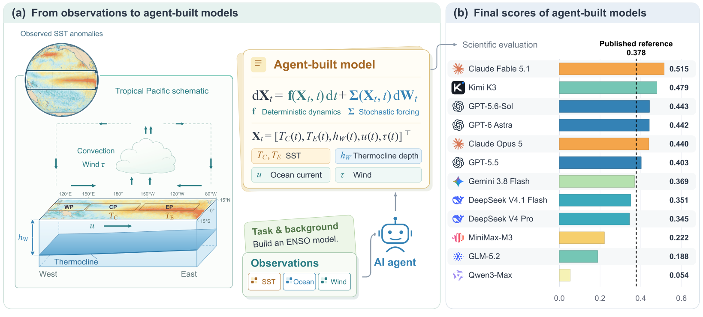
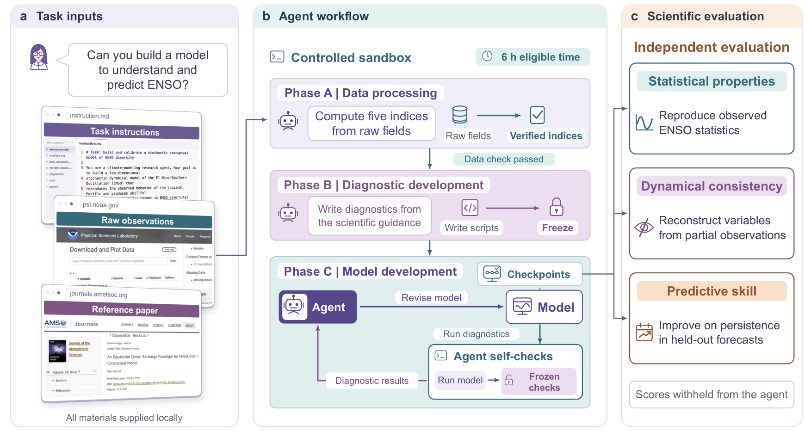
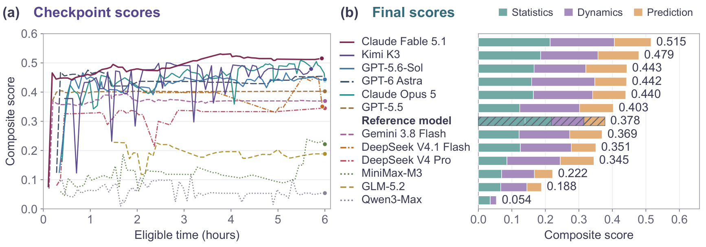
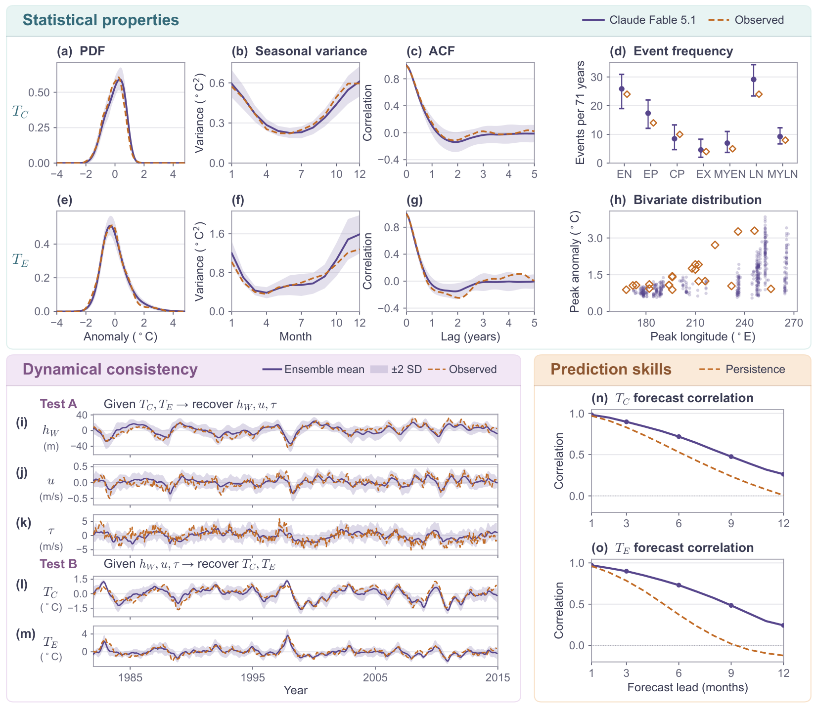
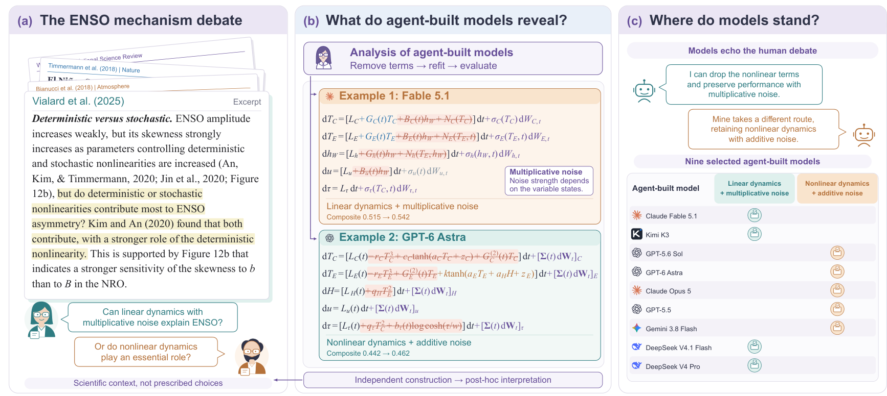

SciExam for ENSO：让科研智能体从真实观测建立有竞争力的气候模型
论文原文 ↗Yinling Zhang、Langchen Liu、Dongbin Xiu 等，SciExam for ENSO: Can AI Agents Build Climate Models?，arXiv，2026。论文页面 ·
一个智能体提出新的科学模型后，怎样评价它？开放研究常没有现成答案，模型的价值需要通过其产生的行为来判断。SciExam 以厄尔尼诺—南方涛动 ENSO 为对象，让智能体从真实观测建立少变量气候模型，再测试气候统计、隐藏变量恢复和未来预测。它同时研究评价方法与模型产出：智能体能否建立有竞争力、又能参与科学讨论的动力学结构？
ENSO 是热带太平洋海洋与大气耦合产生的不规则暖冷变化，也是年际气候变化的主要模态。低阶概念模型用少数关键物理量及随机扰动描述它，使研究者能够比较不同的耦合与反馈解释。

原图 1：海洋与大气观测被压缩成五个关键指标，智能体建立随机动力学模型，再与已发表参考模型共同比较。
方法怎么做：从五项观测指标到可以独立运行的动力学模型
模型跟踪中、东太平洋海表温度异常，西太平洋温跃层深度异常，中央太平洋东西向海流和西太平洋东西向风。异常是相对相应月份平均状态的偏离，温跃层深度描述暖海水的垂向结构。智能体需要写出这些量怎样相互影响，再用随机扰动表示未逐一展开的快速过程。
六小时任务分为相连的三个阶段。首先，将 1980–2014 年的原始海温、海流和风场转换为五组月度指标，接受共同的数据处理检查。其次，根据科学目标编写自己的诊断程序，例如检查温度分布、季节性和预测能力；诊断在建模开始前冻结。最后，智能体选择方程、拟合参数、自由模拟并根据诊断修改模型，提交可执行的时间推进函数、参数和解释。
隐藏评分者使用提交的同一函数完成三个互补测试：自由运行模型，比较暖冷事件与气候统计；只输入部分变量，检验能否通过模型联系恢复其他变量；从留出年份的初始状态向前预测 1–12 个月，并与异常值保持不变的持续性预测比较。前两项各占综合分的 30%，预测占 40%。这样，模型既要产生合理的长期行为，也要编码有用的变量联系和预测信息。

原图 2：先处理数据、建立并固定诊断，再进行模型开发；隐藏评价以统计、变量恢复和留出预测考察最终成果。
最高系统的一次轨迹说明模型如何形成：它先尝试简单双变量物理结构，之后扩展为五变量线性耦合，并加入季节、非线性和随机项，依据诊断调整与校准。每轮修改都会改变同一组变量的时间演化，最终可以被统一模拟、恢复与预测测试评价。
主要结果：模型竞争力与暖冷不对称的两种解释
**十二个智能体系统中，六个模型超过已发表参考模型。**最高综合分为 0.515，参考为 0.378，优势主要来自变量恢复和留出预测。各能力分项使研究者看见模型怎样改善：它不仅拟合一条历史温度曲线，还利用耦合结构推断未输入的海洋或大气量，并从新初始条件产生预测。

原图 3：左侧展示模型在开发过程中的变化，右侧拆开最终模型的统计、恢复和预测成绩，说明综合表现的来源。
最高模型同时复现多种 ENSO 统计，恢复温跃层、海流和风等隐藏变量，并在 1–12 个月提前量上取得高于持续性预测的温度相关性。温度分布、季节依赖、事件持续时间和不同事件类型，给出了比单一预测误差更丰富的物理行为比较。

原图 4：上部比较气候统计，左下比较变量恢复，右下比较不同提前量的预测。模型与观测或持续性基线在相同问题上对应。
**简化后的强模型对应两种已有科学解释。**作者删除部分方程项、重新拟合并评价，发现较强模型可归为两类：线性耦合加状态依赖的随机扰动，以及非线性耦合加不随状态变化的随机扰动。前者通过“当前状态影响扰动强度”形成不对称，后者通过动力学反馈本身的非线性形成不对称。这正对应 ENSO 暖事件和冷事件强度不对称的两种竞争解释，而任务说明没有向智能体指出这项争议。
最高模型删除非线性动力学项后，仍保留暖冷不对称，综合分从 0.515 增至 0.542；另一类模型则需要非线性反馈。简化使产出从一份高分代码转为能够分析其机制的概念模型。

原图 5：删项、重新拟合与评价显示哪些结构保留主要行为，右侧将简化模型联系到两种暖冷不对称解释。
**可用信息会改变智能体怎样建模。**隐去年份后，最高系统仍能建立超过参考成绩的模型，支持其利用观测关系开展建模；开放文献检索时，耦合更稀疏、结构更贴近理论；增加数据访问也会改变校准目标与模型选择。受控信息条件由此帮助理解智能体使用知识和数据的方式。
领域贡献：在没有标准答案时评价开放研究
SciExam 把科学模型当作可运行对象，通过互补的行为测试评价其价值，既保留开放建模空间，也提供与已发表模型的共同参照。结果表明，智能体已经能够从真实观测建立有竞争力的概念模型，其可简化结构还与科学家正在讨论的问题相联系。它为科研智能体评价提供了一个方向：让产出进入科学问题本身，通过统计、推断和预测考察模型带来的知识。
附：完整原始摘要中文翻译
人们越来越多地要求语言模型智能体开展开放式科学研究，但通常仍依据已知答案、评分量规或语言模型评审者对其结果评分；这些方式都无法判断一个新的科学模型是否有效。厄尔尼诺—南方涛动人工智能科学考试（SciExam for ENSO）是一项基准：智能体根据真实观测，为作为年际气候变化主导模态的 ENSO 建立低阶随机模型。在六小时预算内，智能体处理观测，编写自己的诊断程序；这些诊断随后被冻结，智能体只能用它们的结果作为反馈来开发模型。隐藏评分者接着测试模型能否复现 ENSO 的统计特征、恢复未观测变量，以及预测留出的年份，并以同样方式评价一个已发表模型。十二个智能体系统中，有六个产出的模型评分高于已发表模型，主要原因是更好的变量恢复和预测能力。较强模型的简化形式，各自与 ENSO 暖冷不对称性的两种竞争解释之一相容；这一开放争议从未在任务中被提及。对最高系统在不同可用信息条件下进行的受控运行表明，其得分可能并非来自记忆带有具体年份的观测记录，且它接收到的信息会影响其建立模型的方式。因此，SciExam for ENSO 能够在没有已知答案的情况下评价智能体研究；结果提示，智能体已经能够建立具有竞争力的模型，而其结构涉及科学家仍在争论的问题。